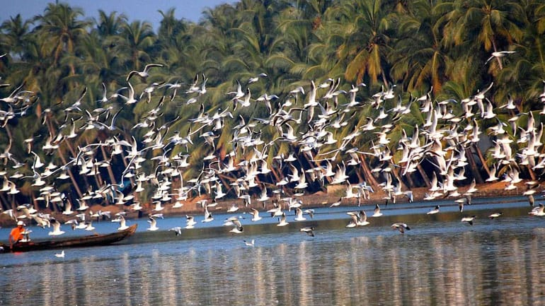
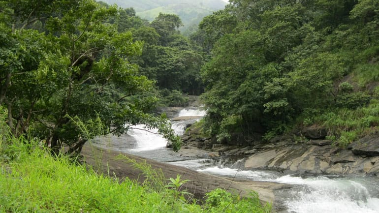

Malappuram

Bounded by the Nilgiris hills on the East and the Arabian Sea on the west, the district of Malappuram literally the land atop the hills, is remarkable for its unique natural beauty. Perched among the undulating hills and the meandering rivers that flow to reach the coconut-fringed seacoast, the land conceals a unique and eventful history.
The hill country also contributed much to the cultural artistic traditions of the state. The mosques and temples of the land are known for their spectacular festivals. The land of great poets and writers, political and religious leaders, the district has carved a unique place of its own in the history of Kerala Home to the khilafath movement and the mappila revolts, which questioned the British authority in India, Malappuram was the military headquarters of the zamorins of Kozhikode since ancient times. Malappuram District was formed on 16th of June 1969 with the Nilgiris of Tamilnadu in the east, Arabian sea in the west, Kozhikode and Wayanad Districts in the north and Palakkad and Thrissur District in the south. The District has a geographical area of 3550 sq. kms, which is 9.13% of total area of the state and ranks 3rd in the state.
Hot Tourist Spots
Kadalundi Bird Sanctuary

Kakkadampoyil
